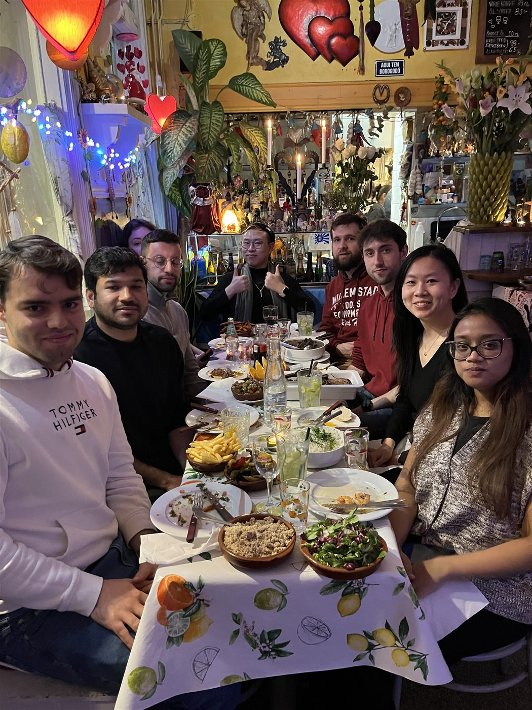
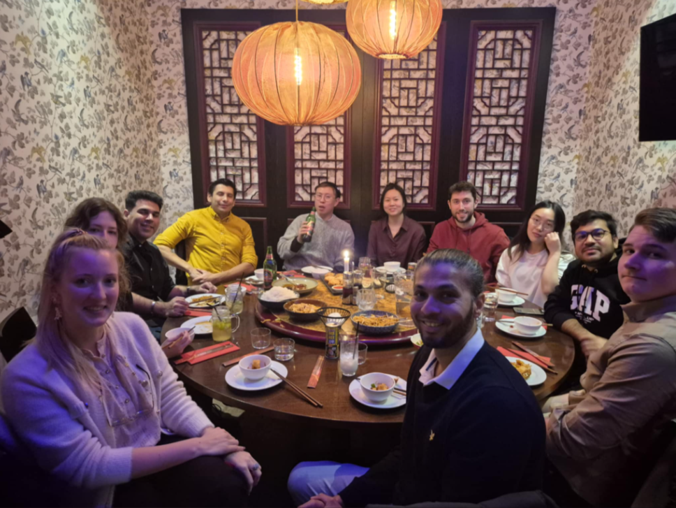

Personal notes
Outside work, I like things that keep me curious and a little hands-on: hiking, home design, plant care, books, food, and music. I have a scouting background and still like nature walks, foraging, and the kind of trip where the best part is a trail, a view, and a packed lunch.
A few personal reference points: a 2019 Norway road trip with hikes including Galdhøpiggen and Besseggen; a summer in Switzerland in 2023 that left me fond of train travel and Migros peach iced tea; and a habit of signing up for occasional dance, karate, or kick-boxing classes when I want to move differently.
I sing in a hobby choir in Gamla stan on Tuesdays, and I am slowly becoming the kind of person who notices plant cuttings, interior details, and promising seedling swaps wherever they appear.
- Choir
- Books
- Food club
- Plant swaps
- Home design
- Hiking
- Stockholm
Book club
I co-host a workplace book club: a small forum for readers to exchange favourites, current reads, and recommendations. A few personal favourites include Billy Summers and The MANIAC, and lately I have been listening to more audiobooks, including Stockholm historical fiction such as Sekelskiftesmorden.
Fellow readers can connect with me on Goodreads.
Food club
I also organize a workplace food club, where we explore restaurants around Stockholm and collect short notes on what we tried together.

Boteco da Silviana
Feijoada Brasileira
A warm, lively dinner built around Brazilian comfort food and shared plates.

Formosa
Meny Sichuan · Wokade oxfile · dim sum
A personal favourite from the Sichuan tasting menu, especially the wok-fried beef fillet and dim sum. Strongly recommended; a Stockholm Chinese restaurant classic with a long history in the city.
T-Centralen train table
A small live board for rail departures from Stockholm's central interchange, filtered to metro, tram, and train services.
Loading live departures...
| When | Line | Destination | Track | Status |
|---|---|---|---|---|
| Departures load from SL when available. | ||||
Live data from SL Transport via Trafiklab.